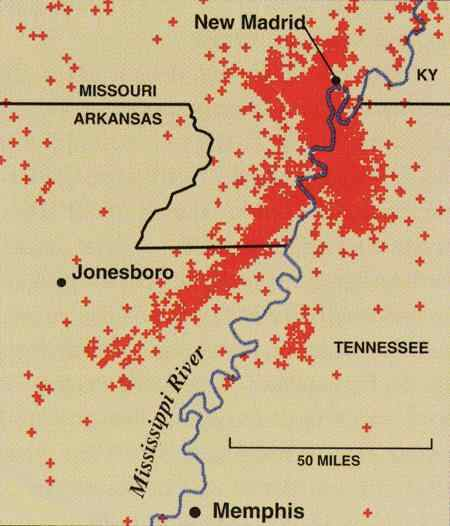
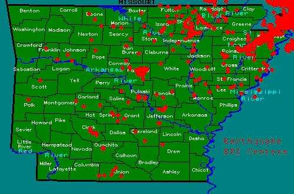
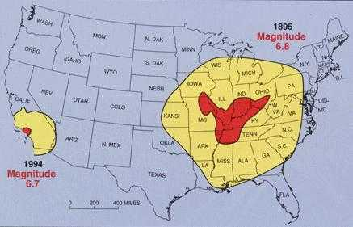

Article # 70
Getting Arkansas Prepared for the Effects of a Major Earthquake?


A1: Physical Geography
“Earthquakes and Arkansas”
By Patricia Porter, April Cruce, Justin Gifford, Shylnda Nolen, Blake Frasier, & Floyd Gray
Principles of Geography: GEOG 1305, Section 2721
Prepared: March 5, 2001
Getting Arkansas Prepared for the Effects of a Major Earthquake?
“Several passengers from on board a steam boat ascending the Mississippi in 1820, went on shore near New Madrid. While amusing themselves with a small collection of books found in one of the houses, the whole house was so shaken that they were scarcely able to stand upon their feet. Some consternation was, of course, felt, and much terror expressed. ‘Don’t be alarmed’ said the lady of the house, ‘it is nothing but an earthquake” (Penick 51).
Arkansas is located in an area known as the New Madrid Seismic Zone (NMSZ). This zone is home of the highest number of earthquakes in the United States, and has also experienced some of the strongest earthquakes in U.S. history (see Appendix I). If an earthquake happened now would Arkansas be prepared? Arkansas would be severely effected by a high magnitude earthquake. Earthquakes cause severe damage and are considered disasters.
In the winter of 1811-1812, northeastern Arkansas was struck by three of the most powerful earthquakes in U.S. history. Even today, this region has more earthquakes than any other part of the United States east of the Rocky Mountains. The reason for these earthquakes is the New Madrid Fault and the Reelfoot Rift (see Appendix II). The New Madrid Fault extends approximately 120 miles southward from the Charleston, MO area down to Marked Tree, AR. The fault is active and averages more than 200 measured earthquakes per year. Nearly every 18 months it releases a shock of 4.0 on the Richter Scale or more and earthquakes of 5.0 or greater are released about once per decade (http://quake.usgs.gov/prepare/factsheets/HiddenHazs/).
“The Richter Scale measures the magnitude of the seismic waves from an earthquake. The scale is logarithmic; that is, the amplitude of the waves increases by powers of 10 in relation to the Richter magnitude numbers.” An equation can be used to approximate the energy of the earthquake. The equation includes this magnitude and the distance from the seismograph to the earthquake’s epicenter. The Richter Scale ranges from 0-9, although there are no set upper limits (http://infoplease.lycos.com/ce6/sci/A0841853.html).
An earthquake is a sudden release of energy within the Earth producing a shaking of the Earth. But, does an earthquake actually move? In a way it does and in a way it does not. The place where the Earth’s crust actually moves is called the focus. The point directly above the focus is called the epicenter. The earthquake itself does not move, the energy from the quakes travels worldwide. Bergman and Renwick have a great analogy for this: “an earthquake is like a stone being cast into the water. There is a disturbance in the homeostasis of the water causing ripples/waves to spread out across the water.” The rock is to the earthquake as the ripples in the water are to the seismic waves (Bergman 91).
In the winter of 1811 around two million square miles were shaken and up to 50,000 square miles were topographically changed by earthquakes measuring above 8.0 of the Richter Scale along the New Madrid Fault Line. Through the months to come, there were a considerable amount of earthquakes that took place but with diminishing intensities. A range of side effects from raised and sunken lands to large landslides characterized the most seriously affected areas (Coffman 43).
In Arkansas between the years 1811 and 1839 there were at least thirty earthquakes measuring close to or above 4.0 on the Modified Mercalli Intensity Scale. According to the Modified Mericalli Intensity Scale, the size of an earthquake is measured by the degree of violence of the earthquake’s motion and takes into consideration the overall effects on people and both natural and man-made structures (Coffman 2). Such a reading means that earthquakes were felt by nearly everyone, many people were awakened, and trees, poles and other tall objects were disturbed (Coffman 3-192). One of the two earthquakes that occurred in the year 1955 had its epicenter located at the Tennessee-Arkansas-Missouri border, but was felt as far as Kentucky, Alabama, and Illinois. On January 1, 1969, another earthquake took place in central Arkansas with a magnitude measuring 4.2 on the Modified Mercalli Intensity Scale. This earthquake cracked floors and walls in Little Rock and North Little Rock and was felt in the southern parts of Missouri and at Memphis, TN (Coffman 54-57). On September 26, 1990, an earthquake measuring 4.6 on the Richter Scale struck the New Madrid Fault at 8:19 a.m. This event forced Arkansas to realize that the New Madrid Fault is far from inactive, and its history is not through being recorded (Gordon). It quaked before and it will quake again.
The highest risk for an earthquake in the United States is along the New Madrid Fault. If a major earthquake were to occur, it would be felt through half the United States (see Appendix III). Damage would be expected in 20 states or more, and Missouri alone has an estimate damage of six billion dollars (http://www2.semo.edu/ces/CES2.HTML). Destruction covers more than 20 times the area because of underlying geology. Soil in the central United States is looser and sandier than on the west coast; therefore, shock waves would travel much farther and the same magnitude earthquake on the west coast would be about ten times worse in the central U.S.
It is hard to make accurate estimates about damage because the last major earthquake was in 1812. During this time the situations were totally different. The damages and losses were only a fraction of what they would be now. Land, buildings, and roads were not developed as they are now; and the populations were no where as much as they are today. The population of Arkansas in 1810 was 1,062 and the population in the year 2000 was 2,673,400 (http://www.census.gov/dmd/www/resapport/states/arkansas/xls). Preparation is the key to minimizing the amount of damage. More prepared cities have proven to have less losses than other unprepared cities. “Education, planning, proper building construction, and preparedness . . . are proven to minimize . . . losses, deaths, and injuries” (http://www2.semo.edu/ces/CES2.HTML). San Francisco was prepared and suffered 67 deaths and less than seven billion dollars in property damage to a 6-7.1 magnitude earthquake. Armenia wasn’t prepared and suffered 25,000 deaths and more than 20 billion dollars in damage. Missouri and the Midwest are more prepared than Armenia, but only a fraction as prepared as San Francisco and California structures are built to withstand earthquake shaking. Japan (all construction is done with earthquake prevention in mind) was devastated in a 1995 earthquake with a magnitude of 6.9 in Kobe. The earthquake destroyed highways, bridges, and buildings. The structures were predicted by Japan’s earthquake-savvy architects to be able to withstand much more powerful shocks. The quake claimed 5,500 lives and produced 100 billion dollars in damages. U.S. officials are scared of comparable earthquakes in the New Madrid area where few structures would measure up to Japanese standards (www.cusec.org)
During an earthquake most of the damage is a result of ground shaking and fault slipping. When fault slipping occurs it causes the soil to shift and move which can cause landslides. Ground shaking causes buildings to bounce up and down, sway from side to side, and move in other violent ways. Buildings can be shaken apart or slip off their foundations (http://www.worldbook.com/fun/bth/earthquake/html/howdamaged.htm). AN earthquake can also cause a building to be out of plumb, which is caused by excessive horizontal movement in the exterior walls. Indicators that a building is out of plumb are broken glass windows, jammed doors, and an offset of more than one inch from the top to bottom of a wall (http://quake.ualr.edu/schools/guide/appenle.htm). In areas with soft wet soil disaster called liquefaction can cause buildings to sink into the soil. Severe shaking causes the wet soil to behave as a liquid instead of a solid and everything on top of the soil sinks or the soil can flow as a river and flow toward lower ground and bury anything in its way. Because we are so close to a major river this is major problem for our area. Fire can also cause a lot of damage. If the earthquake breaks or ruptures gas and power lines it can spark a fire. The 1906 San Francisco earthquake ranks as one of the worst disasters in the United States history because of a fire that raged on for three days after the quake. Many people depend on gas for cooking or heating their homes. Other hazards during an earthquake include spills of toxic chemicals. Sewage lines may break, and sewage may seep into water supplies. Drinking of such impure water may cause cholera, typhoid, dysentery, and other serious diseases (http://www.worldbook.com/fun/bth/earthquake/html/howdamaged.htm).
A non-structural damage would be the disruption of commerce. It is likely that if a major earthquake hits it will cause all concrete roads, bridges, and rail lines to be shot to pieces. Most airports would be unable to use the runways due to crumbling of the runways. There would be a devastating loss of farmland. Land could dry up or flood and this would lead to years of repair to those damages. In the central U.S. a major earthquake would effect the entire country. A lot of commerce depends on railroads and 18-wheelers, and this would be like having a hole in the middle of the country.
Estimated damages for residents in Arkansas are serious injuries, fatalities, displacement, damage to contents of buildings, architectural damage, slight to severe structural damage, collapsed buildings, and electrical and telephone outages. Magnitudes of 5-5.9 on the Richter Scale will not do much serious damage, but an earthquake with a magnitude of 6-6.9, which is predicted for this area, is much more damaging and could result in numerous deaths. A magnitude higher than 7 would be devastating (http://quake.ualr.edu.public/estimate).
Although the New Madrid Seismic Zone experiences the most earthquakes, it is lagging in preparation for another major one. The NMSZ is making big steps to becoming prepared. In 1983, seven states including Arkansas, established the Central United States Earthquake Consortium (CUSEC) to “improve public awareness of earthquakes . . . promote earthquake resistant building codes . . .” and other various preparations (http://www.CUSEC.org). The CUSEC’s primary mission is “ . . . the reduction of deaths, injuries, property damage and economic losses resulting from earthquakes in the Central United States”. They have stressed mitigation, research, resource development, and constituency building. Earthquakes measuring 6.7 in California caused 20 billion dollars in damage and claimed 33 lives, and that is a “prepared” city. This region is now home to millions of people, unlike in 1811, and structures were not built to withstand earthquakes. Earthquake preparations have also lagged behind. CUSEC is attacking all these problems to better prepare Arkansas and other states for the next New Madrid earthquake (http://www.Cusec.org).
There are few insurance companies in Arkansas that provide earthquake insurance under the standard homeowner’s insurance. Insurance companies have seen no need for worrying about earthquake damage. Earthquake insurance can be purchased separately. Deductibles under the earthquake policies are usually five or ten percent with 500 dollars being the minimum. If the coverage fails to go into effect before the earthquake, there is no coverage, which will be a problem since most people have not purchased earthquake insurance. Earthquake coverage is rated based on the construction of a building and the zone it is located in, for example Pulaski County and Faulkner County are in zone four whereas the rates in zone two are the highest. Counties in this zone are Clay, Craighead, Crittendon, Greene, Cross, Jackson, and Poinsett. Zone two is closer to the New Madrid Fault than zone four; therefore, it would be expected to receive more damage and losses (Smith, personal interview).
There is no doubt that there would be extensive damages to the New Madrid Seismic Zone if a major earthquake were to occur. With organizations like CUSEC we can become educated and prepared. We can cut losses and damage if we only take the time to prepare.
Works Cited
Bergman, Edward F., Renwick, William H. Introduction to Geography: People, Places, and Environment. Upper Saddle River, New Jersey: Prentice Hall, 1999
Central United States Earthquake Consortium. <http://www.cusec.org>
Coffman, Jerry L., Von Hake, Carl A. Earthquake History of the United States. Washington: U.S. Department of Commerce. Rev. ed. 1996
Farley, John B. Earthquake Fears, Predictions, and Preparations in Mid-America. Carbondale: Southern Illinois Univeristy, 1998
Penick, James L. The New Madrid Earthquakes of 1811-1812. Columbia Missouri: University of Missouri Press, 1976
Nutti, Otto W. Evaluation of Past Studies and Identification of Needed Studies of the Effects of Major Earthquakes occuring in the New Madrid Fault Zone. Kansas City, Missouri: Federal Management Agency, 1981
Prescott, Will. “Uncovering Hidden Hazards in the Mississippi Valley.” 2 March 1998. 12 February, 2001 <http://quake.usgs.gov/prepare/factsheets/HiddenHazs/>
Smith, Joyce. Personal Interview. 13 February 2001. Royce Borden Insurance Agency
Thompson, J. L. “New Madrid Fault.” 6 December 1999. 11 February, 2001 <http://www2.semo.edu/ces/CES2.HTML>
U.S. Census Bureau. “Resident Population and Apportionment of U.S. Households.” 12 February, 2001 <http://www.census.gov/dmd/www/resapport/states/arkansas.xls>
University of Arkansas at Little Rock. “Estimates of Damage from an Earthquake on the Southern Portion of the New Madrid Fault Zone (NMFZ).” 1998. 11 February, 2001 <http://quake.ualr.edu.public/estimate/index.htm>
World Book. “How an Earthquake Causes Damage.” 1999. 13 February, 2001 <http://www.worldbook.com/fun/bth/earthquake/html/howdamaged.htm>
Appendix I

Number of earthquakes in Arkansas since 1974-present.
http://quake.usgs.gov/prepare/factsheets/NewMadrid/SeismicZone.gifAppendix II

Number of epicenter in Arkansas.
http://quake.ualr.edu/public/epicenters.htm
Appendix III

Earthquakes of similar magnitude affected the two areas shown. Red indicates minor to major damage and yellow indicates shaking felt with little or no damage.
http://quake.usgs.gov/prepare/factsheets/NewMadrid/Charleston1895.gif